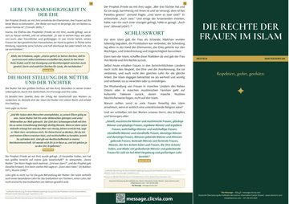

Was ist der Sinn des Lebens?
Deutsche Übersetzung des 6-seitigen Faltblatts des Islamic Information Center (Dubai); Koranverse in der offiziellen Übersetzung von Bubenheim und Elyas, Hadithe in inoffizieller Übersetzung.
Woher komme ich? Warum bin ich in diesem Leben? Wohin gehe ich nach dem Tod?
WAS IST DER SINN DES LEBENS?
Eine der ersten Fragen, die an die Tür unseres Verstandes klopfen, wenn wir über den Sinn unseres Lebens nachdenken, lautet: „Woher kommen wir?“
Sind wir durch zufällige natürliche Ereignisse hier? Oder durch das Wirken eines weisen Schöpfers?
Die Existenz eines Schöpfers anzuerkennen, ist gewiss der erste Schritt, um den wahren Sinn unseres Lebens zu verstehen. Es gibt viele logische und vernünftige Gründe, an die Existenz eines Schöpfers zu glauben. Im Folgenden werden drei davon kurz genannt.
1. DER ANFANG DES UNIVERSUMS
Der erste Beweis, der auf die Existenz Gottes (des Schöpfers) hinweist, hängt mit dem Verständnis des Ursprungs des Universums zusammen.
Stell dir vor, du gehst durch eine Wüste und findest eine Uhr. Wir wissen, dass eine Uhr aus Glas, Kunststoff und Metall besteht. Glas wird aus Sand gewonnen, Kunststoff aus Erdöl, und Metall wird aus dem Inneren der Erde abgebaut – und all diese Bestandteile gibt es in der Wüste. Würdest du glauben, dass die Uhr von selbst entstanden ist? Dass die Sonne schien, der Wind wehte, ein Blitz einschlug, Erdöl hervorquoll und sich mit dem Sand und dem Metall vermischte und dass sich die Uhr im Laufe von Millionen Jahren durch Zufall oder natürliche Zufälle gebildet hat?
Die menschliche Erfahrung und die einfache Logik sagen uns, dass etwas, das einen Anfang hat, nicht einfach aus dem Nichts entsteht und sich auch nicht selbst erschaffen kann. Die vernünftigste Erklärung ist daher, dass ein höherer Schöpfer das Universum erschaffen hat. Und dieser Schöpfer muss notwendigerweise mächtig und allwissend sein, da Er das gesamte Universum ins Dasein gebracht und die „Gesetze der Wissenschaft“ erschaffen hat, die es lenken. Wir können auch zu der Überzeugung gelangen, dass für diesen Schöpfer die Gesetze von Raum und Zeit nicht gelten, da Zeit und Raum mit der Erschaffung des Universums begannen. All diese Eigenschaften bilden den Grundbegriff Gottes, des Schöpfers des Universums. Und dies stimmt vollkommen mit der modernen Wissenschaft überein, die zu dem Schluss kommt, dass das Universum endlich ist und einen Anfang hat.
Manche fragen vielleicht: „Wer hat Gott erschaffen?“ Die Antwort lautet: Gott, der Schöpfer, ist anders als Seine Schöpfung. Der Begriff Gottes besagt, dass Er ewig ist, schon immer existiert hat und keinen Anfang hat; daher ist die Frage, wer Gott erschaffen hat, unvernünftig.
2. DIE VOLLKOMMENHEIT DES UNIVERSUMS
Der zweite Beweis, der auf die Existenz eines intelligenten Schöpfers hinweist, ist die vollkommene Ordnung und das vollkommene Gleichgewicht unseres komplexen Universums.
Viele Eigenschaften des Universums zeigen deutlich, dass es eigens dafür gestaltet wurde, Leben zu ermöglichen: etwa der Abstand zwischen Erde und Sonne, die Dicke der Erdkruste, die Rotationsgeschwindigkeit der Erde, der Sauerstoffanteil in der Atmosphäre und sogar die Neigung der Erdachse. Wären diese Größen auch nur geringfügig anders, könnte kein Leben existieren.
So wie eine Uhr einen intelligenten Hersteller braucht, um die Zeit genau zu messen, so muss auch die Erde einen intelligenten Schöpfer haben, der ihre exakte Umlaufbahn um die Sonne aufrechterhält. Könnte das von selbst geschehen?
Wenn wir die Ordnung, die präzisen Gesetze und die Systeme in uns selbst und im übrigen Universum sehen – ist es dann nicht vernünftig anzunehmen, dass sie einen Ordner haben? Und die beste Erklärung für diesen Ordner ist die Existenz eines einzigen Gottes, der dieses System erschaffen hat.
3. DIE OFFENBARUNG GOTTES
Der dritte Beweis, der auf die Existenz Gottes hinweist, ist die tatsächliche Offenbarung, die Gott der Menschheit als Zeichen Seiner Existenz gesandt hat.
Es gibt klare Zeichen dafür, dass das Buch des Islam, der Koran, das Wort Gottes ist. Es folgt eine kurze Übersicht der Gründe, die diese Aussage stützen.
Wenn Gott den Menschen ein Buch zur Rechtleitung offenbart hat, muss dieses Buch klare Beweise für die Existenz Gottes enthalten.
- Der Koran wurde vor mehr als 1400 Jahren herabgesandt und enthält dennoch viele wissenschaftliche Tatsachen, die den Menschen jener Zeit unbekannt waren und erst in jüngerer Zeit von der Wissenschaft entdeckt wurden.
- Beispiele dafür sind: das Wasser als Ursprung allen Lebens (Koran 21:30), das sich ausdehnende Universum (Koran 51:47) und die eigenen Umlaufbahnen von Sonne und Mond (Koran 21:33).
- Er enthält auch viele historische Tatsachen, die den Menschen jener Zeit unbekannt waren, sowie zahlreiche Prophezeiungen, die sich als zutreffend erwiesen haben.
- Er ist frei von jedem Fehler und Widerspruch, obwohl er schrittweise über 23 Jahre hinweg offenbart wurde und eine große Vielfalt an Themen behandelt.
- Er ist seit seiner Offenbarung Wort für Wort in seiner Originalsprache, dem Arabischen, bewahrt worden – im Unterschied zu anderen Schriften, die in ihrer ursprünglichen Form nicht mehr existieren.
- Er hat eine einfache, reine und universelle Botschaft, die den menschlichen Verstand und den angeborenen Glauben an Gott – gepriesen und erhaben ist Er – anspricht.
- Der Koran hat eine tiefe, ergreifende Wirkung auf die Menschen; unberührt bleibt nur, wer seine Süße nicht mit dem Herzen gekostet hat.
- Er wurde dem Propheten Muhammad (Allahs Segen und Frieden seien auf ihm) offenbart, von dem bekannt war, dass er weder lesen noch schreiben konnte; dennoch besitzt er einen einzigartigen Sprachstil, der allgemein als Gipfel der Beredsamkeit und der sprachlichen Schönheit des Arabischen anerkannt ist.
Die vernünftigste Erklärung für die vielen einzigartigen und wundersamen Seiten des Korans ist, dass er von Gott stammt.
GOTT SENDET RECHTLEITUNG
Schon allein wenn wir anerkennen, dass wir von dem weisen und allmächtigen Schöpfer erschaffen wurden, ist zu erwarten, dass Er uns über den Zweck unserer Erschaffung unterrichtet. Wie können wir wissen, was Gott von uns erwartet? Leben wir nach dem Prinzip von Versuch und Irrtum, oder leben wir, um einen selbst gewählten Zweck zu erreichen? Oder „schwimmen wir mit dem Strom“ und folgen den Spuren anderer?
Nein, gewiss nicht: Gott hat Propheten gesandt und Offenbarungen herabgesandt, um uns unseren Zweck klarzumachen.
Gott sandte Tausende von Propheten, mindestens einen zu jedem Volk, alle mit derselben Botschaft: allein Gott anzubeten und Seiner Rechtleitung zu folgen. Zu ihnen gehörten Adam, Noah, Abraham, Mose, Jesus und Muhammad (Friede sei mit ihnen allen).
Der Prophet Muhammad (Friede sei mit ihm) ist der letzte in der Kette der Propheten; er war das vollkommene Beispiel eines ehrlichen, gerechten, mitfühlenden und mutigen Menschen. Er wurde mit der letzten Offenbarung Gottes, dem Koran, gesandt, um den Menschen das zu erklären, was herabgesandt worden war (den Koran).
Der Koran ist ein Buch der Rechtleitung, das viele Fragen erklärt, die die meisten Menschen bewegen: den Zweck unseres Daseins, wer Gott ist, welche Taten Gott gefallen und an welchen Er Wohlgefallen hat und welche Ihm missfallen, die Geschichten der früheren Propheten und die Lehren, die wir daraus ziehen, sowie Einzelheiten über das Paradies, die Hölle und den Tag des Gerichts. Er will auch Missverständnisse über das Wesen Gottes ausräumen, etwa über die wahre Stellung des Messias im Vergleich zu Gott.
(’Isa sagte:) „Und gewiß, Allah ist mein Herr und euer Herr; so dient Ihm. Das ist ein gerader Weg.
Koran 19:36
DAS WESEN JESU
Wer den Gottesbegriff im Islam verstehen will, muss sich mit dem Wesen des Messias befassen, da über sein Wesen so viel Verwirrung herrscht und so viele Behauptungen verbreitet sind.
Manche Christen behaupten, „Jesus ist Gott“ oder er sei Teil einer Dreifaltigkeit, das heißt, er sei die Menschwerdung Gottes auf Erden und Gott in menschlicher Gestalt. Doch laut der Bibel wurde Jesus geboren, er aß, schlief, betete und besaß kein Wissen, das alle Dinge umfasst – alles Eigenschaften, die Gottes nicht würdig sind. Gott besitzt die Eigenschaften der Vollkommenheit, während der Mensch das genaue Gegenteil ist. Wie kann also etwas zugleich zwei völlige Gegensätze sein? Das ist nicht vernünftig.
Manche fragen jedoch vielleicht: „Wenn Gott alles kann, warum kann Er dann nicht Mensch werden?“
Per Definition tut Gott nichts, was Seiner Göttlichkeit widerspricht. Würde Gott also ein Mensch werden und menschliche Eigenschaften annehmen, so wäre Er notwendigerweise nicht mehr Gott.
Außerdem enthält die Bibel viele Stellen, an denen Jesus so spricht und handelt, als wäre er ein Diener Gottes und als wäre Gott ein von ihm verschiedenes Wesen.
So heißt es zum Beispiel, Jesus „fiel nieder auf sein Angesicht und betete“ [Matthäus 26:39].
Wenn Jesus Gott wäre – würde ein Gott auf sein Angesicht fallen und beten? Und zu wem würde er in diesem Fall beten?
Die meisten Christen sagen: „Jesus ist der Sohn Gottes.“ Und wir müssen uns fragen: Was bedeutet das eigentlich? Gott ist gewiss weit darüber erhaben, einen physischen, buchstäblichen Sohn zu haben.
Vielmehr stellen wir fest, dass der Ausdruck „Sohn Gottes“ in den ältesten biblischen Sprachen bildlich für einen „gerechten Diener“ gebraucht wird. Im Alten Testament wird er an mehreren Stellen für verschiedene fromme Männer wie David, Salomo und Israel verwendet, nicht nur für Jesus. Ein Beispiel: „Israel ist mein erstgeborener Sohn“ (Exodus 4:22).
Der islamische Glaube über Jesus erklärt, wer er wirklich war, und bewahrt zugleich den reinen Glauben an Gott und an Seine absolute Größe, Einzigkeit und Vollkommenheit.
Jesus, Friede sei mit ihm, war ein ehrenwerter Prophet, von Gott gesandt, um dazu aufzurufen, allein Gott anzubeten.
„Es steht Allah nicht an, Sich ein Kind zu nehmen. Preis sei Ihm! Wenn Er eine Angelegenheit bestimmt, so sagt Er dazu nur: ,Sei!’, und so ist es.“
Koran 19:35
ALSO … WARUM BIN ICH HIER?
Wir alle erkennen an, dass die Teile unseres Körpers, wie Augen, Ohren, Gehirn und Herz, einen Zweck haben. Wäre es dann nicht sinnvoll, dass auch der Mensch als Ganzes einen Zweck hat?
Gott, der Allweise und Allmächtige, hat uns nicht einfach erschaffen, damit wir ziellos umherirren oder unsere Grundtriebe und -bedürfnisse wie Essen, Trinken und Fortpflanzung befriedigen. Vielmehr haben wir einen bedeutenderen und höheren Zweck: die Existenz Allahs anzuerkennen und allein Ihn anzubeten, sodass wir nach der Rechtleitung unseres Schöpfers leben. Diese Rechtleitung ermöglicht uns ein erfolgreiches und gesegnetes Leben in jeder Hinsicht. Sie umfasst gottesdienstliche Handlungen wie das Vertrauen auf Gott, das Gebet und das Fasten, aber auch Handlungen, die der Gesellschaft nützen, wie gut zu den Nachbarn zu sein, die Familie zu unterstützen, ehrlich zu sein und für Tiere zu sorgen.
Gott verbietet uns, irgendetwas anderes anzubeten (zum Beispiel Statuen, die Sonne, den Mond, Heilige, Priester oder sogar Propheten), denn Er braucht gewiss weder Teilhaber noch Mittler. Jeder Mensch kann Gott jederzeit direkt anbeten.
Gott beschreibt dieses Leben als eine Prüfung, und die Menschen werden auf verschiedene Weise geprüft. Wir können nicht beeinflussen, was uns widerfährt, wohl aber, wie wir darauf reagieren. Zu den Mitteln, durch die wir uns Gott nähern und das Paradies erlangen können, gehören Geduld im Unglück und Dankbarkeit für die Wohltaten. Gott warnt uns auch vor einer schrecklichen Strafe in der Hölle, wenn wir den Unglauben wählen und Seine Gebote missachten.
ALSO … WAS SOLL ICH JETZT TUN?
Die Prüfung des Glaubens eines Menschen besteht darin, seinen Verstand zu gebrauchen, um die Zeichen der Existenz Gottes zu betrachten und anzuerkennen, und nach Seinen Geboten und Verboten zu leben. Das geschieht, indem man sich den Geboten Gottes hingibt – was auf Arabisch bedeutet, ein „Muslim“ zu werden.
Gott hat den Islam für alle zugänglich gemacht, unabhängig von ihrer Vergangenheit, ihrem früheren Glauben oder ihrer jetzigen Lage. Daher kann jeder Muslim werden, indem er einfach an das glaubt, was dieses Bekenntnis besagt, und das folgende Glaubensbekenntnis spricht:
„Ich bezeuge, dass es keinen Gott gibt, der es wert ist, angebetet zu werden, außer Allah, und ich bezeuge, dass Muhammad der Gesandte Allahs ist.“
Ist es nicht an der Zeit, dass du den Zweck erfüllst, für den du erschaffen wurdest, dich der Wirklichkeit fügst und die Existenz deines Schöpfers anerkennst?
Koranverse: offizielle Übersetzung von Frank Bubenheim und Dr. Nadeem Elyas (quranenc.com).
* Inoffizielle Übersetzung, für dieses Faltblatt angefertigt (Aussprüche des Propheten und frei zitierte Stellen). Offizielle Hadith-Übersetzungen: hadeethenc.com
Deutsche Übersetzung des Faltblatts des Islamic Information Center (Dubai) · www.islamicic.com


Flyer zum Ausdrucken
 Einführung in den Islam: eine praktische und ausgewogene Lebensweise
Einführung in den Islam: eine praktische und ausgewogene LebensweiseDeutsch
 Der Prophet Muhammad: diesen Mann solltest du kennen!
Der Prophet Muhammad: diesen Mann solltest du kennen!Deutsch
 Jesus: ein Prophet Gottes
Jesus: ein Prophet GottesDeutsch
 Das Gottesverständnis im Islam
Das Gottesverständnis im IslamDeutsch
 Der Koran: die letzte Offenbarung an die Menschheit
Der Koran: die letzte Offenbarung an die MenschheitDeutsch
 Missverständnisse über den Islam
Missverständnisse über den IslamDeutsch

Die Rechte der Frau im IslamDeutsch
 Wissenschaftliche Wunder im Koran
Wissenschaftliche Wunder im KoranDeutsch
 Der Tod und das Jenseits
Der Tod und das JenseitsDeutsch